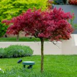
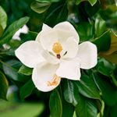
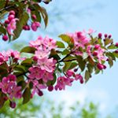

Finding the perfect tree for a small yard can be a delightful yet challenging task. This can be especially true in a picturesque region like Monmouth County, NJ. With its diverse climate and rich soil, this area offers a variety of tree species that can thrive in compact spaces while adding beauty, shade, and character to your landscape. Whether you’re looking to enhance curb appeal, create a serene backyard oasis, or support local wildlife, selecting the right tree is essential. In this article, we’ll explore the top 10 trees that are ideally suited for small yards. From stunning spring blossoms to vibrant autumn foliage, these trees offer year-round interest and require minimal space. Discover how you can transform your small yard into a lush, green haven with these tree service in Monmouth County expert-recommended choices. Thes trees ensure your outdoor space remains both manageable and enchanting.
Top 10 Trees for Small Yards in Central and Southern NJ
Here are ten trees that are well-suited for small yards in Monmouth County, NJ and the surrounding area.

Japanese Maple (Acer palmatum)
This tree offers a variety of shapes, sizes, and leaf colors. This makes it perfect for adding a touch of elegance and unique texture to small yards.
Serviceberry (Amelanchier canadensis)
A native tree that produces white flowers in the spring, edible berries in the summer, and colorful foliage in the fall. It is a multi-seasonal favorite.
Redbud (Cercis canadensis)
Known for its stunning pink to purple spring blossoms, the redbud is a compact tree that adds vibrant color to any yard.

Magnolia (Magnolia stellata)
The star magnolia produces fragrant, star-shaped white flowers early in the spring and has a compact, manageable growth habit.
Dogwood (Cornus florida)
With beautiful white or pink flowers in the spring and striking red foliage in the fall. The dogwood is a versatile and attractive choice of tree for small spaces.
Hawthorn (Crataegus spp.)
This small tree offers beautiful spring flowers, attractive berries, and is resistant to many pests and diseases. The Hawthorn is a low-maintenance option.

Crabapple (Malus spp.)
Known for their stunning spring blossoms and attractive fruit, crabapples come in many varieties that are well-suited for small yards.
Eastern Red Cedar (Juniperus virginiana)
A hardy evergreen that provides year-round greenery, the eastern red cedar is ideal for privacy screens or windbreaks in small yards.
Amur Maple (Acer ginnala)
This small, multi-stemmed tree is known for its vibrant red fall color. Professionals can prune it to fit into tight spaces easily.
Dwarf Birch (Betula nana)
A compact version of the classic birch, this tree offers attractive bark and delicate foliage, perfect for adding a touch of grace to a small yard.
Tree Service in Monmouth County Enhances Small Trees
Tree service in Monmouth County plays a crucial role in maintaining the health and vitality of trees, ensuring they thrive in small yards and continue to offer their many benefits. Professional arborists provide expert care tailored to the specific needs of each tree species. This includes precise pruning that encourages healthy growth and shape to disease and pest management that prevents common threats. Regular inspections and maintenance by tree service professionals help identify potential issues early, allowing for timely intervention and reducing the risk of damage. These services also include soil analysis and proper fertilization, ensuring trees receive the necessary nutrients to flourish. By keeping trees healthy, tree providers enhance their aesthetic appeal, structural integrity, and lifespan. Ultimately, professional tree care ensures that the trees in Monmouth County’s small yards remain beautiful, safe, and beneficial, contributing to a greener, more enjoyable environment for homeowners.
Ask a Tree Service in Monmouth County Professional for Recommendations
Choosing the right tree for your small yard in Monmouth County can significantly enhance your outdoor space. Trees provide beauty, shade, and ecological benefits without overwhelming the area. The top ten trees listed above offer a variety of benefits, each with its unique characteristics and seasonal appeal. From the vibrant blossoms of the redbud and dogwood to the elegant foliage of the Japanese maple and serviceberry, these trees are selected for their suitability to small spaces. By incorporating one or more of these trees into your landscape, you can create a charming and functional yard. Whether you’re looking to add color, structure, or privacy, these expert-recommended choices will help you achieve a lush, inviting, and sustainable outdoor environment. Embrace the beauty and benefits of these small yet mighty trees and watch your yard transform into a green haven.
These trees not only fit well in limited spaces but also provide aesthetic and environmental benefits, making them excellent choices for homeowners in Monmouth County. Not sure which tree is right for your yard? Contact Ben Bivins Tree Experts, your local tree service in Monmouth County professionals!